| vehicle | gender | distance_campus | ice_cream | rent | major | height | winter |
|---|---|---|---|---|---|---|---|
| None | Female | 1.5 | Cookie Dough | 724 | Environmental and Sustainability Studies | 61 | Liked it |
| Mercury | Female | 14.7 | Sherbet | 200 | Administrative Justice | 60 | Don’t like it |
| Ford | Female | 2.4 | Chocolate Brownie. | 600 | Bio Chem | 68 | Liked it |
| Toyota | Female | 5.2 | coffee | 0 | 66 | Loved it | |
| Jeep | Male | 2.0 | Cookie Dough | 600 | Pre-health Careers | 71 | Loved it |
| Subaru | Male | 5.0 | none | 500 | Finance | 72 | No opinion |
2 Graphical Description of Data
Before you begin, review the process for importing a dataset. Click on the box below to expand the directions for importing a dataset into your Data Toolbox.
- Open the Data toolbox in Rguroo.
- From the Data Import dropdown, select Dataset Repository.
- In the top search box, type kozak, then select the Statistics Using Technology – Kozak repository.
- In the middle search box, type the first few letters of the dataset, and choose your dataset that appears in the lower panel.
- Click the . The dataset will be imported into your Rguroo account.
- Click the to close the dialog.
- To view the dataset, double-click the dataset under the Data toolbox list.
In chapter 1, you were introduced to the concepts of population, which again is a collection of all the measurements from the individuals of interest. Remember, in most cases you can’t collect the entire population, so you have to take a sample. Thus, you collect data either through a sample or a census. Now you have a large number of data values. What can you do with them? No one likes to look at just a set of numbers. One thing is to organize the data into a table or graph. Ultimately though, you want to be able to use that graph to interpret the data, to describe the distribution of the data set, and to explore different characteristics of the data.
This chapter will focus on organizing data, creating graphs of the data, and using the graphs to understand aspects of the data.
This textbook uses Rguroo to perform all graphical and descriptive statistics, and all statistical inference. When using Rguroo, you will need to either import a dataset from a repository or create a dataset. For directions on how to create a dataset in Rguroo, please refer to Chapter 0.
2.1 Qualitative Data
Remember, qualitative data are words describing a characteristic of the individual. Once you’ve gathered raw data, the real work begins. A long list of observations doesn’t tell you much on its own. Raw data are usually messy, unstructured, and difficult to understand or use. The next step is to organize the data in a way that reveals patterns and meaning.
2.1.1 Organizing Qualitative Data
A simple way to organize qualitative data is to create a table, called a frequency distribution or relative frequency distribution. Both of these organize non‑numerical categories into groups and show how often each category occurs.
A frequency distribution for qualitative data is a table that lists each category with its corresponding frequency.
A relative frequency distribution for qualitative data is a table that lists each category with its corresponding relative frequency. Relative frequencies are calculated by dividing the frequency of each category by the total frequency. Relative frequencies can be in the form of a reduced fraction, proportion, or a percentage.
These displays of qualitative data help you quickly see which categories are most common, how the data is spread across different groups, and whether any categories stand out as unusually frequent or rare.
Example 2.1 (Creating a Frequency and Relative Frequency Distribution) Data was collected for two semesters in a statistics class. Create a frequency distribution and relative frequency distribution for vehicle type.
 The dataset for this example is available in the Rguroo dataset repository Kozak, with the dataset name class_survey1. Table 2.1 shows the variables and the first 6 rows of the data set. A complete description of the variables is provided in the dataset code book that follows.
The dataset for this example is available in the Rguroo dataset repository Kozak, with the dataset name class_survey1. Table 2.1 shows the variables and the first 6 rows of the data set. A complete description of the variables is provided in the dataset code book that follows.
Every data frame has a code book that describes the data set, the source of the data set, and a listing and description of the variables in the data frame. Click the box below to expand the codebook for the dataset class_survey1.
Code book for Class Survey1 Dataset
Description The dataset gives survey results from two semesters of statistics classes at Coconino Community College in the years 2018-2019.
Format
This data frame contains the following columns:
vehicle: Type of car a student drives
gender: Self declared gender of a student
distance_campus: how far a student lives from the Lone Tree Campus of Coconino Community College (miles)
ice_cream: favorite ice cream flavor
rent: How much a student pays in rent
major: Students declared major
height: height of the student (inches)
winter: Student’s opinion of winter (Love it, Like it, Don’t like, No opinion)
Source
Kozak K (2019). Survey results form surveys collected in statistics class at Coconino Community College.
References
Kozak, 2019
Solution
Click to expand the box below see how to create a frequency and relative frequency distribution for vehicle type.
Before you begin: Make sure you have already imported the class_survey1 dataset into your Rguroo account, as was shown here.
- Open the Analytics toolbox in Rguroo.
- Open the Analysis dropdown, and select Tabulation and Categorical. This opens the Data Tabulation dialog.
- In the Data Tabulation dialog, choose the class_survey1 dataset from the Dataset dropdown.
- Choose the vehicle variable from the Factor 1 dropdown. For frequency, select counts. For realtive frequency, select proportions.
- Click the preview icon
 to see a preview of the frequency distribution.
to see a preview of the frequency distribution.
Click here to see the Rguroo dialog


2.1.2 Graphical Displays of Qualitative Data
Another way to display data is with a graph. There are several different graphs that are used for qualitative data. Typical qualitative graphs include bar graphs, Pareto charts, and pie charts. Bar graphs can be created using a statistical program like Rguroo.
Bar graphs or charts consist of the frequencies on one axis and the categories on the other axis. Drawing the bar graph using Rguroo is performed by importing the dataset (or creating a dataset) and using the Plots toolbox in Rguroo.
Example 2.2 (Drawing a Bar Chart) Use the class_survey1 to create a bar chart of vehicle type.
 The dataset for this example is available in the Rguroo dataset repository Kozak, with the dataset name class_survey1. A complete description of the variables is provided in the dataset code book.
The dataset for this example is available in the Rguroo dataset repository Kozak, with the dataset name class_survey1. A complete description of the variables is provided in the dataset code book.
Solution
Click to expand the box below see how to create the bar graph for vehicle type.
Before you begin: Make sure you have already imported the class_survey1 dataset into your Rguroo account, as was shown here.
- Open the Plots toolbox in Rguroo.
- Open the Create Plot dropdown, and select Barplot. This opens the Barplot dialog.
- In the Barplot dialog, choose the class_survey1 dataset from the Dataset dropdown.
- Choose the vehicle variable from the Factor 1 dropdown.
- Click the preview icon to see a preview of the bar graph.
- (Optional) In the Label section of the dialog:
- Enter Bar Graph for Vehicle Type in the Title textbox.
- Enter Vehicle Type in the X-Axis textbox.
- Enter Number of Vehicles in the Y-Axis textbox.
- Enter Bar Graph for Vehicle Type in the Title textbox.
- Click the preview icon to see a preview of the bar graph.
- In the 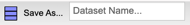 textbox, enter the name VehicleBarGraph for the bar graph. Click the button to save the bar graph to your Rguroo account.
Click here to see the Rguroo dialog
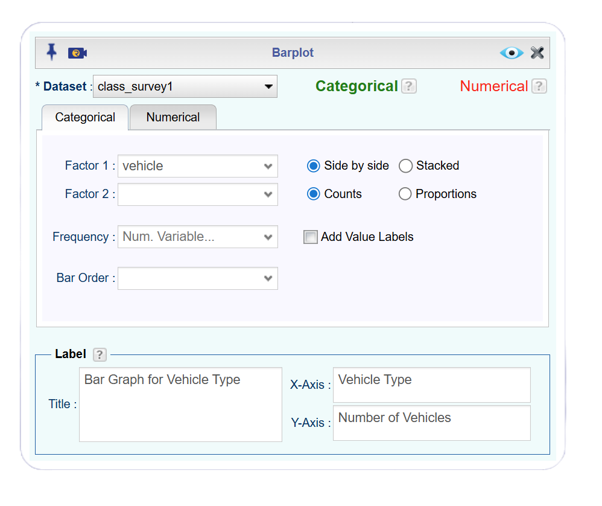
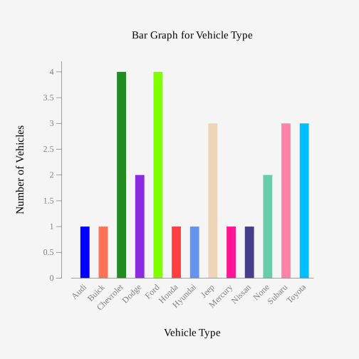
Figure 2.3 is a Bar graph with bars for Audi, Buick, Honda, Hyundai, Mercury, Nissan with height of 1, Dodge and None with height of 2, Jeep, Subaru, Toyota with heights of 3, and Chevrolet and Ford at height of 4.
Notice from Figure 2.3, you can see that Chevrolet and Ford are the more popular car, with Jeep, Subaru, and Toyota not far behind. Many types seem to be less commonly used, and tied for last place. However, more data would help to figure this out.
All graphs should have labels on each axis and a title for the graph.
Another version of a bar graph that is useful is a relative frequency bar graph. A relative frequency bar graph gives you a clear way to compare how different categories or values occur, especially when working with datasets of different sizes. By converting raw counts into proportions, the graph highlights patterns that might otherwise be hidden. This makes it a powerful tool for spotting meaningful relationships in data, comparing data of different sizes, and communicating those insights in a way that’s easy for others to understand.
Rguroo can generate a relative frequency bar graph from the same plot toolbox.
Example 2.3 (Drawing a Relative Frequency Bar Chart for Vehicle Type) Use the class_survey1 to create a relative frequency bar chart of vehicle type.
 The dataset for this example is available in the Rguroo dataset repository Kozak, with the dataset name class_survey1. A complete description of the variables is provided in the dataset code book.
The dataset for this example is available in the Rguroo dataset repository Kozak, with the dataset name class_survey1. A complete description of the variables is provided in the dataset code book.
Solution
To create a relative frequency bar graph, follow the directions for creating a bar graph here. Then click proportion to change frequency to relative frequency. Don’t forget to change your y-axis label to proportion as well.
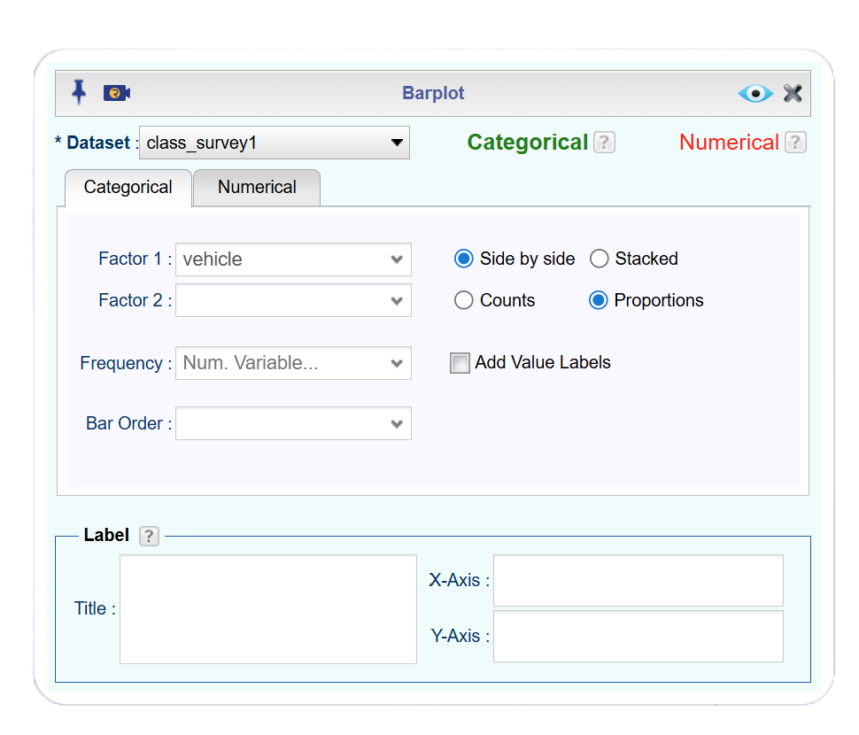
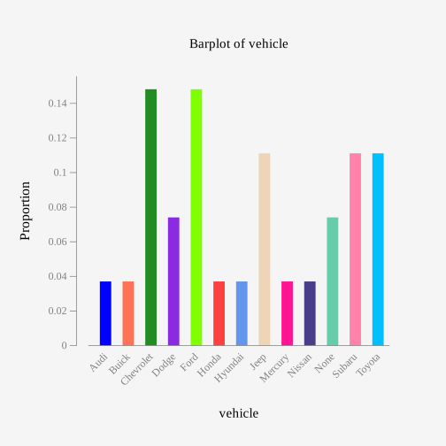
Figure 2.5 is a relative frequency bar graph of vehicles showing the vehicle types on the horizontal axis and proportions (relative frequency) on the vertical axis.
Notice that a frequency bar graph and relative frequency bar graph give you similar information. However, a relative frequency bar graph shows you the proportions of the total vehicles.
The beauty of data frames with multiple variables is that you can answer many questions from the data. Suppose you want to see if gender makes a difference for the type of car a person drives. If you are a car manufacturer, if you knew that certain genders like certain cars, then you would advertise to the different genders.
Example 2.4 (Drawing a Bar Chart of Vehicle Type by Gender) Use the class_survey1 to create a bar chart of vehicle type by gender.
 The dataset for this example is available in the Rguroo dataset repository Kozak, with the dataset name class_survey1. A complete description of the variables is provided in the dataset code book.
The dataset for this example is available in the Rguroo dataset repository Kozak, with the dataset name class_survey1. A complete description of the variables is provided in the dataset code book.
Solution
To create a bar graph of vehicle by gender, follow the directions for creating a bar graph here. Then, in the barplot dialog box, select the gender variable from the Factor 1 dropdown and the vehicle variable from the Factor 2 dropdown. Don’t forget to title your graph appropriately. A picture of the dialog box is shown below.
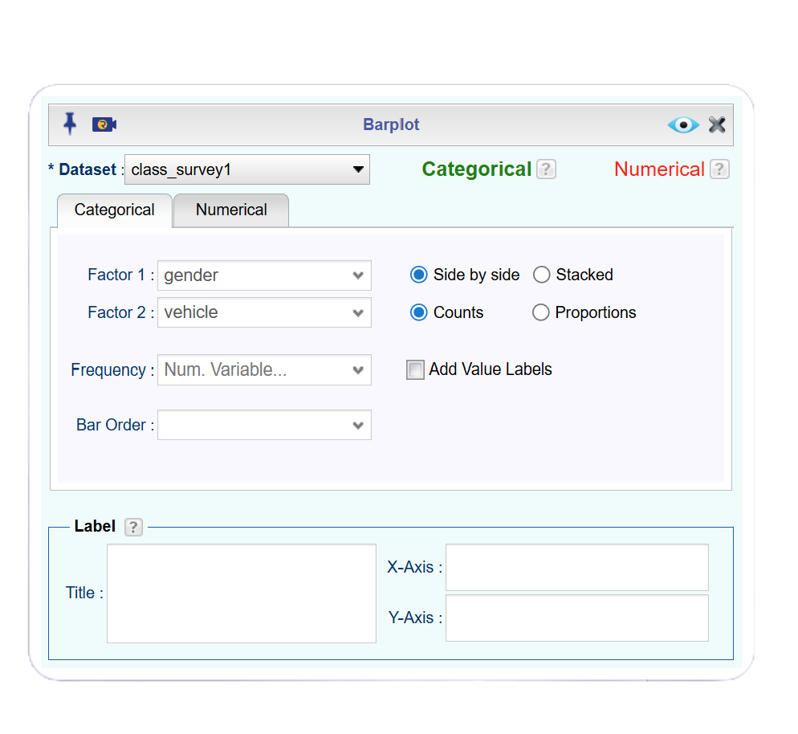
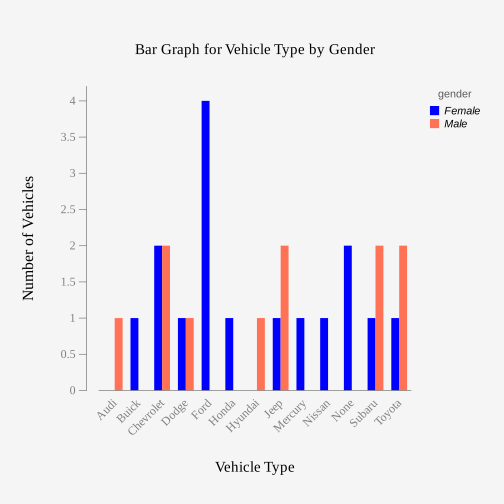
Figure 2.7 is a bar graph of number of vehicles separated by female and male. Audi and male has height of 1, Buick and female has a height of 1, Chevrolet and male and Chevrolet and female have heights of 2, Dodge and male and Dodge and female has heights of 1, Ford and female has a height of 4, Honda and female has a height of 1, Hyundai and male has a height of 1, Jeep and male has a height of 2 while Jeep and female has a height of 1, Mercury and female has a height of 1, Nissan and female has a height of 1, no car and female has a height of 2, Subaru and female has a height of 1, Subaru and male has a height of 2, Toyota and female has a height of 1, and Toyota and male has a height of 2.
Notice a Ford is driven by females more than any other car, while Chevrolet, Mercury, and Subaru cars are equally driven by males. Obviously a larger sample would be needed to make any conclusions from this data.
Another form of a bar graph that disaggregates by a factor is called a stacked bar graph. A stacked bar graph shows how different sub‑groups contribute to an overall total by stacking the segments on top of each other within each bar.
Example 2.5 (Drawing a Stacked Bar Chart of Vehicle Type by Gender) Use the class_survey1 to create a stacked bar chart of vehicle type by gender.
 The dataset for this example is available in the Rguroo dataset repository Kozak, with the dataset name class_survey1. A complete description of the variables is provided in the dataset code book.
The dataset for this example is available in the Rguroo dataset repository Kozak, with the dataset name class_survey1. A complete description of the variables is provided in the dataset code book.
Solution
To create a bar graph of vehicle by gender, follow the directions for creating a bar graph here. Then, in the barplot dialog box, select the gender variable from the Factor 1 dropdown and the vehicle variable from the Factor 2 dropdown. To make it a stacked bar graph, click the “stacked” button. Don’t forget to title your graph appropriately. A picture of the dialog box is shown below.

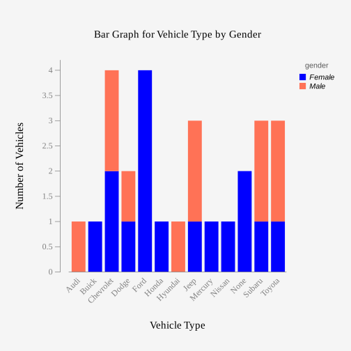
Another type of graph that is also useful for qualitative data is a pie chart. A pie chart is a circular graph where each slice represents a percentage of the whole, proportional to the numerical value it represents. Pie charts allow for easy visualization of how each part contributes to the whole.
Example 2.6 (Drawing a Pie Chart for Vehicle Type) Use the class_survey1 to create a pie chart of vehicle type.
 The dataset for this example is available in the Rguroo dataset repository Kozak, with the dataset name class_survey1. A complete description of the variables is provided in the dataset code book.
The dataset for this example is available in the Rguroo dataset repository Kozak, with the dataset name class_survey1. A complete description of the variables is provided in the dataset code book.
Solution
Click to expand the box below see how to create the pie chart for vehicle type.
Before you begin: Make sure you have already imported the class_survey1 dataset into your Rguroo account, as was shown here.
- Open the Plots toolbox in Rguroo.
- Open the Create Plot dropdown, and select Pie Chart. This opens the Pie Chart dialog.
- In the Pie Chart dialog, choose the class_survey1 dataset from the Dataset dropdown.
- Choose the vehicle variable from the Factor dropdown.
- (Optional) In the Label section of the dialog:
- Enter Pie Chart for Vehicle Type in the Title textbox.
- Enter Pie Chart for Vehicle Type in the Title textbox.
- Click the preview icon to see a preview of the pie chart.
- In the textbox, enter the name VehiclePieChart for the pie chart. Click the button to save the pie chart to your Rguroo account.
Click here to see the Rguroo dialog


Figure 2.10 is a pie chart of type of vehicles owned by students (Toyota, Subaru, none, Nissan, Mercury, Jeep, Honda, Ford, Dodge, Chevrolet, and Buick, Hyundai, and Audi). Each vehicle percentage is displayed in the legend on the right.
There are many other types of graphs that can be used on qualitative data. There are spreadsheet software packages that will create most of them, and it is better to look at them to see how to create them. It depends on your data as to which may be useful, but the frequency bar graph, relative frequency bar graph, and pie chart are the most useful.
2.1.3 Homework for Qualitative Data Section
- Eyeglassomatic manufactures eyeglasses for different retailers. The first six rows of the number of lenses for different activities is in Table 2.2.
 The dataset for this exercise is available in the Rguroo dataset repository Kozak, with the dataset name Eyglasses.
The dataset for this exercise is available in the Rguroo dataset repository Kozak, with the dataset name Eyglasses.
| activity |
|---|
| Grind |
| Grind |
| Grind |
| Grind |
| Grind |
| Grind |
Code book for Eyeglasses Dataset
Description Activities that an Eyeglass company performs when making eyeglasses, Grind means ground the lenses and put them in frames, multicoat means put tinting or coatings on lenses and then put them in frames, assemble means received frames and lenses from other sources and put them together, make frames means made the frames and put lenses in from other sources, receive finished means received glasses from other source unknown means do not know where the lenses came from.
Format
This data frame contains the following columns:
activity: The activity that is completed to make the eyeglasses by Eyeglassomatic
Source John Matic provided the data from a company he worked with. The company’s name is fictitious, but the data is from an actual company.
References John Matic (2013)
Make a bar chart of this data. State any findings you can see from the graph.
- Data was collected for two semesters in a statistics class drive. Create a bar graph of the variable ice cream. State any findings you can see from the graphs. The data frame is in Table 2.1.
 The dataset for this exercise is available in the Rguroo dataset repository Kozak, with the dataset name class_survey1.
The dataset for this exercise is available in the Rguroo dataset repository Kozak, with the dataset name class_survey1.
Code book for Class Survey1 Dataset
Description The dataset gives survey results from two semesters of statistics classes at Coconino Community College in the years 2018-2019.
Format
This data frame contains the following columns:
vehicle: Type of car a student drives
gender: Self declared gender of a student
distance_campus: how far a student lives from the Lone Tree Campus of Coconino Community College (miles)
ice_cream: favorite ice cream flavor
rent: How much a student pays in rent
major: Students declared major
height: height of the student (inches)
winter: Student’s opinion of winter (Love it, Like it, Don’t like, No opinion)
Source
Kozak K (2019). Survey results form surveys collected in statistics class at Coconino Community College.
References
Kozak, 2019
- The number of deaths in the US due to carbon monoxide (CO) poisoning from generators from the years 1999 to 2011 are in Table 2.3 (Hinatov, 2012). Create a bar chart of this data. State any findings you see from the graph.
 The dataset for this exercise is available in the Rguroo dataset repository Kozak, with the dataset name area.
The dataset for this exercise is available in the Rguroo dataset repository Kozak, with the dataset name area.
| deaths |
|---|
| Urban |
| Urban |
| Urban |
| Urban |
| Urban |
| Urban |
- Data was collected for two semesters in a statistics class drive. The data frame is in Table 2.1. Create a bar graph and pie chart of the variable major. Create a bar graph of major, disaggregated by gender. State any findings you can see from the graphs.
 The dataset for this exercise is available in the Rguroo dataset repository Kozak, with the dataset name class_survey1.
The dataset for this exercise is available in the Rguroo dataset repository Kozak, with the dataset name class_survey1.
Code book for Class Survey1 Dataset
Description The dataset gives survey results from two semesters of statistics classes at Coconino Community College in the years 2018-2019.
Format
This data frame contains the following columns:
vehicle: Type of car a student drives
gender: Self declared gender of a student
distance_campus: how far a student lives from the Lone Tree Campus of Coconino Community College (miles)
ice_cream: favorite ice cream flavor
rent: How much a student pays in rent
major: Students declared major
height: height of the student (inches)
winter: Student’s opinion of winter (Love it, Like it, Don’t like, No opinion)
Source
Kozak K (2019). Survey results form surveys collected in statistics class at Coconino Community College.
References
Kozak, 2019
- Eyeglassomatic manufactures eyeglasses for different retailers. They test to see how many defective lenses they made during the time period of January 1 to March 31. The table Table 2.4 gives the defect and the number of defects. Create a bar chart of the data and then describe what this tells you about what causes the most defects.
 The dataset for this exercise is available in the Rguroo dataset repository Kozak, with the dataset name defects.
The dataset for this exercise is available in the Rguroo dataset repository Kozak, with the dataset name defects.
| type |
|---|
| small |
| small |
| pd |
| flaked |
| scratch |
| spot |
Code book for Defects Dataset
Description Types of defects that an Eyeglass company sees in the lenses they make into eyeglasses.
Format
This data frame contains the following columns:
type: The type of defect that is Seen when making eyeglasses by Eyeglassomatic
Source John Matic provided the data from a company he worked with. The company’s name is fictitious, but the data is from an actual company.
References John Matic (2013)
2.2 Quantitative Data
As with qualitative data, it is also advantageous to organize quantitative data since the long list of raw data is usually long and does not provide insight into the sample or population.
2.2.1 Organizing Quantitative Data
Frequency and relative frequency distributions can also be used for quantitative data, where the categories are numerical values that occur in the data with their corresponding frequency counts or proportions. However, most datasets contain many distinct values, so a regular frequency or relative frequency distribution would be meaningless.
For quantitative data that are widely spread, we can group the data values into classes, also known as binning. When you group data into classes/bins, you create a grouped frequency distribution.
Lower and upper class limits define the boundaries of each class in a grouped frequency distribution. The lower class limit is the smallest value that can belong to a class, while the upper class limit is the largest value that can belong to that same class. Together, these limits specify exactly which data values fall into each interval. Most of the time, classes are displayed using interval notation. For example, suppose we wanted to group the ages of students into a group from 20-25. This could be displayed using interval notation, [20,25). This interval would capture every student whose age is 20 to 25 years, including 20 years old, but not 25 years old. These limits keep the classes organized, prevent overlap, and ensure every data point has a clear place within the distribution.
Each class has a class width, the size of the class (or the number of values within each class). If you have a grouped frequency distribution, the class width can be determined by subtracting two consecutive lower class limits.
Rguroo has three automatic methods to calculate the number of bins; however, we will use Freedman–Diaconis since is usually the most reliable with messy real-world data. Manual calculation of bins is also possible in Rguroo.
Example 2.7 (Creating a Grouped Frequency Distribution) Use the class_survey1 to create a grouped frequency distribution for the distance a student lives from the Lone Tree Campus of Coconino Community College.
 The dataset for this example is available in the Rguroo dataset repository Kozak, with the dataset name class_survey1. A complete description of the variables is provided in the dataset code book.
The dataset for this example is available in the Rguroo dataset repository Kozak, with the dataset name class_survey1. A complete description of the variables is provided in the dataset code book.
Solution
Click to expand the box below see how to create a grouped frequency distribution for distance_campus.
Before you begin: Make sure you have already imported the class_survey1 dataset into your Rguroo account, as was shown here.
- Open the Analytics toolbox in Rguroo.
- Open the Analysis dropdown, and select Tabulation and Numerical (Binning). This opens the Binning dialog.
- In the Binning dialog, choose the class_survey1 dataset from the Dataset dropdown.
- Choose the distance_campus variable from the Factor 1 dropdown. Note: For frequency, select counts. For realtive frequency, select proportions.
- Click the preview icon to see a preview of the frequency distribution.
Click here to see the Rguroo dialog


The grouped frequency distribution above used the default method, Freedman-Diaconis, creating 11 classes. Each class has a class width of 5. Now that the data is organized, it is easily seen that most students live within 15 miles of campus. There are also two students who live farther from campus than the rest of the class.
As mentioned above, Rguroo also allows for manual creation of bins. If we wanted a specific number of bins, we could manually enter that in the Binning toolbox under Bins. In order to manually choose the bins, we need to determine two things: the starting value for the first class and the class width.
To manually find the class width, calculate the following and then round up to a nice number.
\(\text{class width}=\frac{\text{maximum value - minimum value}}{\text{number of classes}}\)
After you have determined the class width, choose a starting value that is the minimum value in the data or lower than the minimum value.
Example 2.8 (Creating a Grouped Frequency Distribution with Specified Number of Classes) Use the class_survey1 to create a grouped frequency distribution with 6 classes for the distance a student lives from the Lone Tree Campus of Coconino Community College.
 The dataset for this example is available in the Rguroo dataset repository Kozak, with the dataset name class_survey1. A complete description of the variables is provided in the dataset code book.
The dataset for this example is available in the Rguroo dataset repository Kozak, with the dataset name class_survey1. A complete description of the variables is provided in the dataset code book.
Solution
To create a grouped frequency distribution with 6 classes, we need to calculate the class width. For this variable the maximum value is 50 and the minimum value is 0.6. Use these values in the class width formula to find the class width.
\(\text{class width}=\frac{50-0.6}{6}=8.233\)
Next, we round the class width up to a nice number, such as class width = 10. Now we need a starting value. Since the minimum value was 0.6, we can use 0 as the starting value just as we did in the last grouped frequency distribution. Enter the information in the Binning dialog box as shown in the image below.


2.2.2 Graphical Displays of Quantitative Data
There are several different graphical displays for quantitative data. With quantitative data, you can talk about how the data is distributed, called a distribution. In addition, the shape of the distribution can be described from the graphs.
Histogram: A graph of frequencies (counts) on the vertical axis and classes on the horizontal axis. The height of the rectangles is the frequency (or relative frequency) and the width of the rectangle is called the class width. The width depends on how many values (bins) are in the histogram.
Density Plot: Similar to a histogram, except smoothing is created to smooth out the graph. The shape is not dependent on the number of bins so the distribution is easier to determine from the density plot.
Stem and Leaf Plot: A graph that organizes numerical data by splitting each value into a “stem” (leading digit(s)) and a “leaf” (the last digit) to show data distribution, frequency, and shape.
Example 2.9 (Drawing Histogram and Density Plot for Distance from Campus) Data was collected for two semesters in a statistics class. Draw a histogram and density plot for the variable the distance a student lives from the Lone Tree Campus of Coconino Community College. Describe the story the graphs tell.
 The dataset for this example is available in the Rguroo dataset repository Kozak, with the dataset name class_survey1. A complete description of the variables is provided in the dataset code book.
The dataset for this example is available in the Rguroo dataset repository Kozak, with the dataset name class_survey1. A complete description of the variables is provided in the dataset code book.
Solution
Click to expand the box below see how to create a histogram for distance to campus.
Before you begin: Make sure you have already imported the class_survey1 dataset into your Rguroo account, as was shown here.
- Open the Plots toolbox in Rguroo.
- Open the Create Plot dropdown, and select Histogram. This opens the Histogram dialog.
- In the Histogram dialog, choose the class_survey1 dataset from the Dataset dropdown.
- Choose the distance_campus variable from the Variable dropdown.
- Click the preview icon to see a preview of the histogram.
- (Optional) In the Label section of the dialog:
- Enter Histogram for Distance to Campus in the Title textbox.
- Enter Distance (in miles) in the X-Axis textbox.
- Enter Number of Students in the Y-Axis textbox.
- Enter Histogram for Distance to Campus in the Title textbox.
- Click the preview icon to see a preview of the histogram.
- In the textbox, enter the name DistanceHistogram for the histogram. Click the button to save the histogram to your Rguroo account.
Click here to see the Rguroo dialog
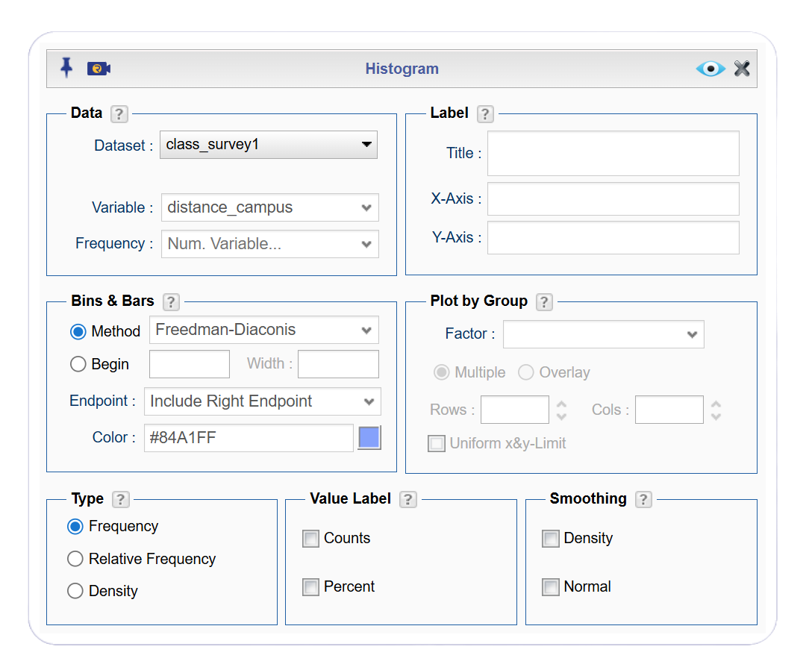

Figure 2.14 is a histogram with the highest bar on left and lowest bars on right with several gaps. This histogram shows that most students live within approximately 15 miles of campus.
To create an overlay of the density plot for distance_campus, follow the directions for creating a histogram here.
Once you are in the histogram dialog box, edit the options in the Type and Smoothing boxes by selecting “density” in both. An image of the revised dialog box is shown below. Remember to change your title and y-axis to reflect that this is now a density plot.
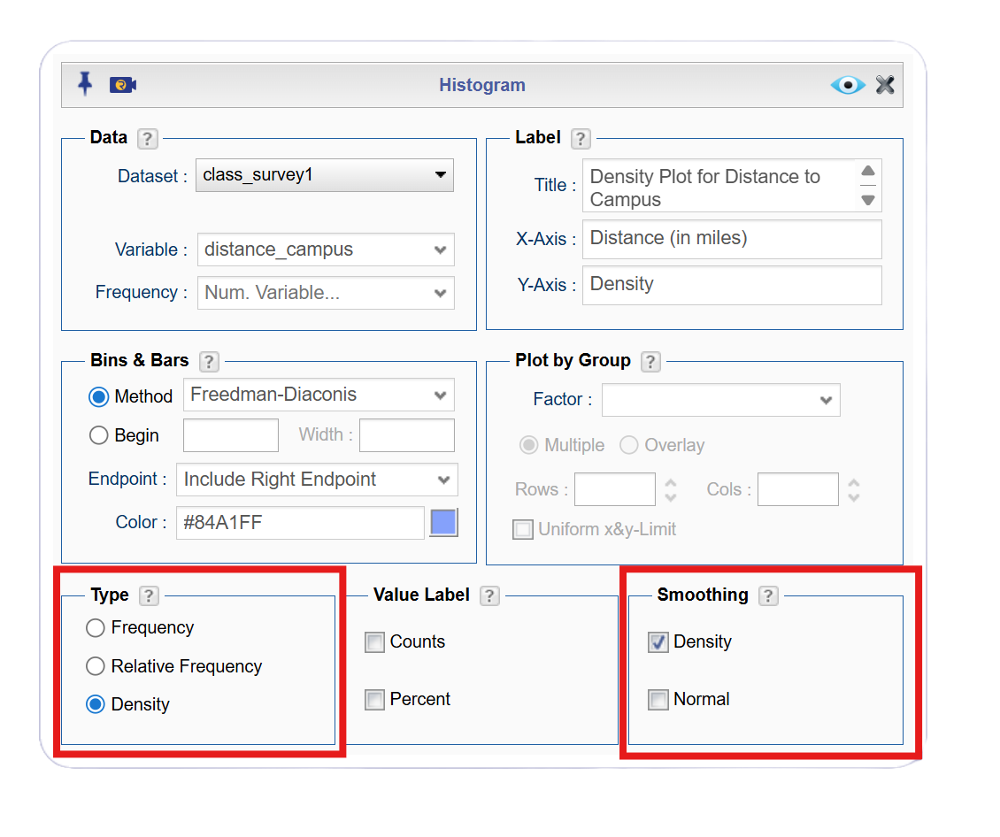

Figure 2.16 is a density plot showing the overlay of the smooth density curve. Notice the histogram and density plot are very similar, but the density plot is smoother. Both the histogram and density plot give you similar insights about the shape of the distribution; however, the smooth density curve highlights the underlying shape of the distribution by smoothing out the jaggedness of the histogram. Reviewing the graphs you can see that most of the students live within 15 miles of the Lone Tree Campus, in fact most live within 5 miles from the campus. However, there is a student who lives around 50 miles from the Lone Tree Campus. This is a great deal farther from the rest of the data. This value could be considered an outlier.
An outlier is a data value that is far from the rest of the values. It may be an unusual value or a mistake. It is a data value that should be investigated. In this case, the student lived really far from campus, thus the value is not a mistake, and is just very unusual.
2.2.3 Shapes of the distribution:
When you look at a distribution, look at the basic shape. There are some basic shapes that are seen in histograms. Realize though that some distributions have no shape. The common shapes are bell-shape, skewed (right or left), and uniform. Another interest is how many peaks a graph may have. This is known as modal.
Modal refers to the number of peaks. A unimodal distribution has one peak, and a bimodal distribution has two peaks. Usually, if a graph has more than two peaks, it suggests that the data come from multiple groups with different characteristics related to the measured variable.
Examining the shape of a distribution gives you a deeper understanding of how your data behaves beyond simple averages or totals. The shape reveals patterns, such as whether values cluster tightly, spread out widely, lean to one side, or form multiple peaks. These aspect that can influence how you interpret results. By paying attention to features like symmetry, skewness, and unusual gaps or spikes, you gain insight into underlying trends, potential outliers, and the most appropriate statistical methods to use.
Other important features to consider are how spread out is the data, and where the center of the graph is. These concepts will be explored in Chapter 3.
2.2.4 Examples of graphs:
Bell-Shape
This graph is bell-shape:

Figure 2.17 is a bell-shaped histogram. Bell shaped graphs have a balanced, mirror‑like appearance, with the bars rising to a peak near the center and then decreasing at roughly the same rate on both sides. The left and right halves of the distribution look similar in both height and spread, so if you folded the graph down the middle, the two sides would line up closely. There are no long tails pulling the shape in one direction, and the overall pattern often forms a smooth, mound‑shaped curve. Note that bell-shape doesn’t require perfect symmetry.
Bimodal
This graph is bimodal:

Figure 2.18 is a bimodal histogram which has two distinct peaks, meaning the bars rise to form one cluster of high values, dip down in the middle, and then rise again to form a second cluster. Visually, the histogram looks like a pair of hills or humps separated by a noticeable valley. In this histogram, the overall shape is symmetric; however, this is not a requirement for a bimodal graph. In addition, the separation between the peaks can be sharp or gradual.
Skewed Right
This graph is skewed to the right:
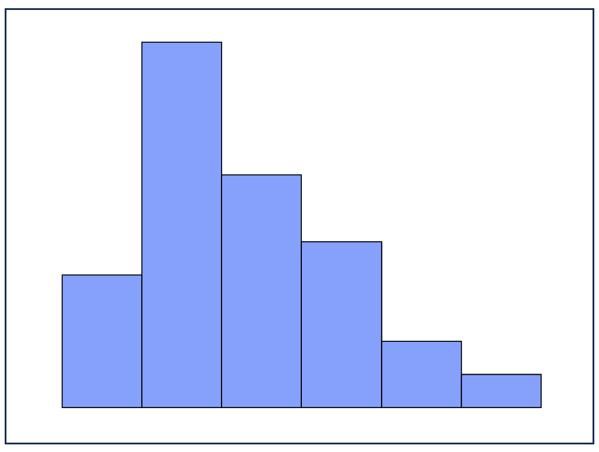
Figure 2.19 is a skewed right histogram that has most of its highest bars on the left side, with the heights tapering off gradually as you move to the right. The bulk of the data forms a tall block on the left, while a long, stretched‑out tail extends as you move right. The most frequently occurring data sits closer to the left, and the right tail is noticeably longer and thinner than the left.
Skewed Left Distribution
This graph is skewed to the left:

Figure 2.20 is a skewed left histogram that has most of its highest bars on the right side, with the heights tapering off gradually as you move to the left. The bulk of the data forms a tall block on the right, while a long, stretched‑out tail extends as you move left.The most frequently occurring data sits closer to the right, and the left tail is noticeably longer and thinner than the left.
Uniform Distribution
This graph is uniform:
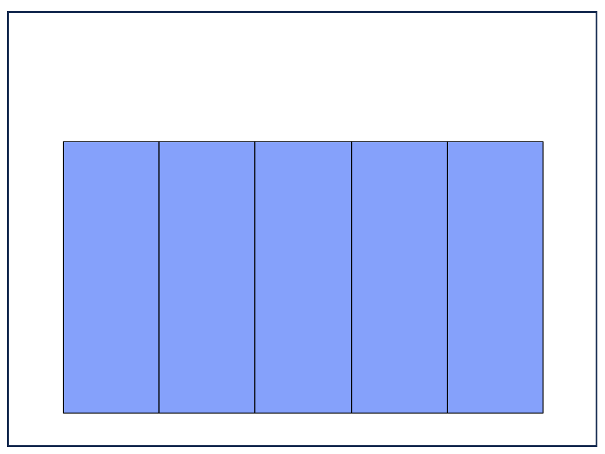
Figure 2.21 is a uniform histogram that has bars that are all roughly the same height, giving the graph a flat, even appearance across the entire range of values. No single interval stands out as especially common or rare; instead, the data are spread evenly, with each bar occurring at about the same frequency. Visually, it looks like a row of nearly level rectangles, without peaks, clusters, or noticeable patterns. Note that the graph above is perfectly uniform (all heights of the bars are equal); however, this is not a requirement to be uniform.
Example 2.10 (Drawing Histogram and Density Plot for Tuition) Data was collected from the Chronicle of Higher Education for tuition from public four year colleges, private four year colleges, and for profit four year colleges. The first 6 rows of the data frame is in Table 2.5. Draw a density plot of instate tuition levels for all four year institutions, and describe the shape of the distribution. Then separate the density plot for instate tuition based on type of institution. Describe any findings from the graph.
 The dataset for this example is available in the Rguroo dataset repository Kozak, with the dataset name tuition_4_year. Table 2.5 displays the first five rows of the dataset. A complete description of the variables is provided in the dataset code book that follows.
The dataset for this example is available in the Rguroo dataset repository Kozak, with the dataset name tuition_4_year. Table 2.5 displays the first five rows of the dataset. A complete description of the variables is provided in the dataset code book that follows.
| INSTITUTION | TYPE | STATE | ROOM_BOARD | INSTATE_TUITION | INSTATE_TOTAL | OUTOFSTATE_TUITION | OUTOFSTATE_TOTAL |
|---|---|---|---|---|---|---|---|
| University of Alaska AnchoragePublic 4-year | Public_4 year | AK | 12200 | 7688 | 19888 | 23858 | 36058 |
| University of Alaska FairbanksPublic 4-year | Public_4 year | AK | 8930 | 8087 | 17017 | 24257 | 33187 |
| University of Alaska SoutheastPublic 4-year | Public_4 year | AK | 9200 | 7092 | 16292 | 19404 | 28604 |
| Alaska Bible CollegePrivate 4-year | Private_4_year | AK | 5700 | 9300 | 15000 | 9300 | 15000 |
| Alaska Pacific UniversityPrivate 4-year | Private_4_year | AK | 7300 | 20830 | 28130 | 20830 | 28130 |
| Alabama Agricultural and Mechanical UniversityPublic 4-year | Public_4 year | AL | 8379 | 9698 | 18077 | 17918 | 26297 |
Code book for Tuition Dataset
Description Cost of four year institutions.
Format
This data frame contains the following columns:
INSTITUTION: Name of four year institution
TYPE: Type of four year institution, Public_4_year, Private_4_year, For_profit_4_year.
STATE: What state the institution resides
ROOM_BOARD: The cost of room and board at the institution (\$)
INSTATE_TUTION: The cost of instate tuition (\$)
INSTATE_TOTAL: The cost of room and board and instate tuition (\$ per year)
OUTOFSTATE_TUTION: The cost of out of state tuition (\$ per year)
OUTOFSTATE_TOTAL: The cost of room and board and out of state tuition (\$ per year)
Source Tuition and Fees, 1998-99 Through 2018-19. (2018, December 31). Retrieved from https://www.chronicle.com/interactives/tuition-and-fees
References Chronicle of Higher Education *, December 31, 2018.
Solution
Before you begin: Make sure you have already imported the tuition_4_year dataset into your Rguroo account, as was shown here.
To create create a density plot, follow the directions for creating a histogram here. For this example, you will select the tuition_4_year dataset from the Dataset dropdown, and choose the INSTATE_TUITION variable from the Variable dropdown. Since this is a density plot, remember to select “density” in both the Type and Smoothing boxes. Also, rememeber to label your graph appropriately. An image of the dialog box is shown below.
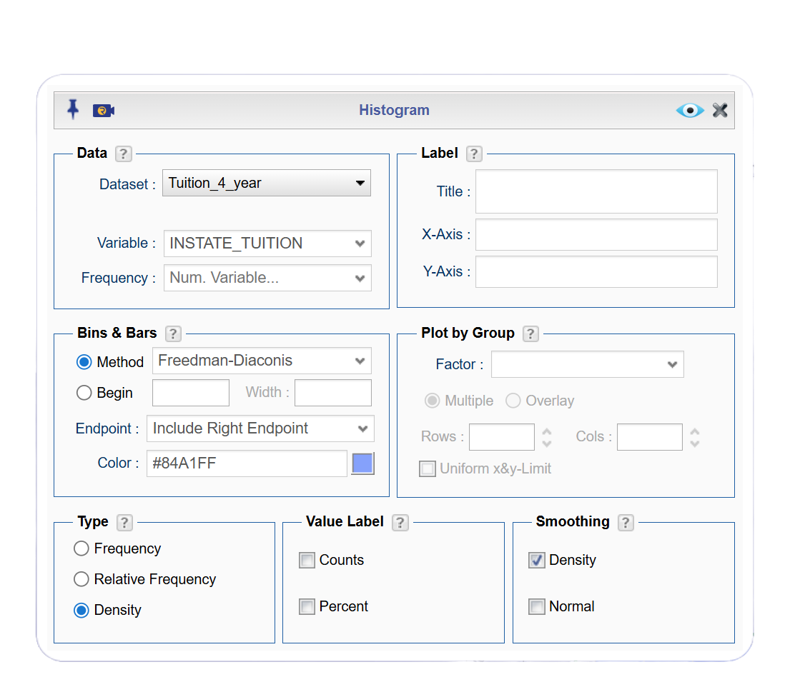
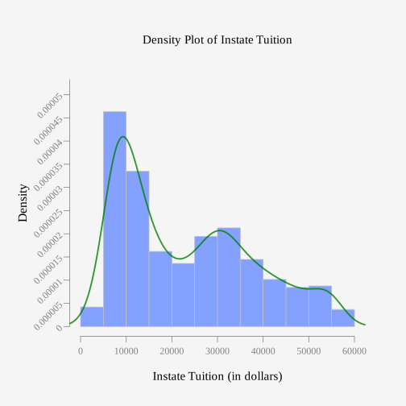
Figure 2.23 is a density plot of instate tuition that has the highest peak on left, then a dip and up to a smaller peak in the middle that is lower than the left peak. Then the bar heights gradually decrease as you move to the right. Due to the characteristics of the graph, the distribution is skewed right.
To create a density plot of instate tuition by type, go to the Basics tab and open your Histogram dialog box. Leave everything you have for creating the density plot. In the “Plot by Group” box, choose the TYPE variable from the Factor dropdown. An image of the dialog box is shown below.
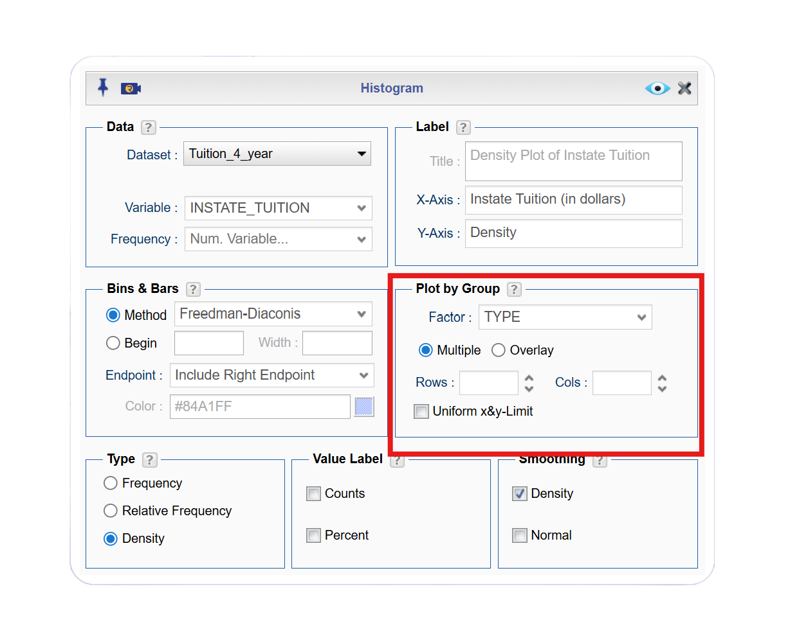
Click to expand the box below see how to create a density plot of instate tuition by type of institution.
Before you begin: Make sure you have already imported the tuition_4_year dataset into your Rguroo account, as was shown here.
- Open the Plots toolbox in Rguroo.
- Open the Create Plot dropdown, and select Histogram. This opens the Histogram dialog.
- In the Hisotgram dialog, choose the tuition_4_year dataset from the Dataset dropdown.
- Choose the INSTATE_TUITION variable from the Variable dropdown.
- In the “Plot by Group” box, choose the TYPE variable from the Factor dropdown.
- In the type option box, click “density.”
- In the smoothing box, click “density.”
- Click the preview icon to see a preview of the density plot.
Click here to see the Rguroo dialog

Figure 2.25 shows density plots for instate tuition, separated by for‑profit, private nonprofit, and public 4‑year colleges. The for_profit_4_year plot has the highest peak on left, the private_4_year plot has the highest peak in the middle, and the public_4_year plot has the highest peak on the left. Public 4 year has the highest peak, with for profit 4 year is lower, and then private 4 year with the lowest peak Because these are density plots, the height of each curve reflects how concentrated the data are in different tuition ranges, and the shape reveals where most institutions fall.
The density plots reveal distinct tuition patterns across the three types of 4‑year institutions. Public colleges have the lowest in‑state tuition, with most schools clustering around $10,000 and relatively little variation, indicating that public tuition is both affordable and fairly consistent nationwide. For‑profit colleges fall in the middle, with tuition centered near $20,000 and a moderately narrow spread, suggesting that many of these institutions charge similar amounts, though a few are more expensive. Private nonprofit colleges stand out as the most costly group, with a peak around $35,000 and a wide distribution that stretches toward much higher tuition levels. This broad spread shows that private colleges vary substantially in price, with some moderately priced and others extremely expensive. Looking at the density curves by type of institution makes it clear that public colleges are the most affordable, for‑profit colleges occupy a middle ground, and private nonprofit colleges are the most expensive and most variable in their tuition levels.
Boxplots are another type of visual display for quantitative data that allows for comparison of two groups. However, boxplots require a few simple calculations, so they will be explored in the next section.
2.2.5 Homework for Quantitative Data Section
- The first six rows of the weekly median incomes of males and females for specific occupations, are given in Table 2.6 (CPS News Releases. (n.d.). Retrieved July 8, 2019, from https://www.bls.gov/cps/). Create a density plot for males and females. Discuss any findings from the graph.
 The dataset for this exercise is available in the Rguroo dataset repository Kozak, with the dataset name tuition_4_year.
The dataset for this exercise is available in the Rguroo dataset repository Kozak, with the dataset name tuition_4_year.
| Occupation | Numworkers | median_wage | male_worker | male_wage | female_worker | female_wage |
|---|---|---|---|---|---|---|
| Management, professional, and related occupations | 48808 | 1246 | 23685 | 1468 | 25123 | 1078 |
| Management, business, and financial operations occupations | 19863 | 1355 | 10668 | 1537 | 9195 | 1168 |
| Management occupations | 13477 | 1429 | 7754 | 1585 | 5724 | 1236 |
| Chief executives | 1098 | 2291 | 790 | 2488 | 307 | 1736 |
| General and operations managers | 939 | 1338 | 656 | 1427 | 283 | 1139 |
| Legislators | 14 | NA | 10 | NA | 4 | NA |
Code book for Wages Dataset
Description Median weekly earnings of full-time wage and salary workers by detailed occupation and sex. The Current Population Survey (CPS) is a monthly survey of households conducted by the Bureau of Census for the Bureau of Labor Statistics. It provides a comprehensive body of data on the labor force, employment, unemployment, persons not in the labor force, hours of work, earnings, and other demographic and labor force characteristics.
Format
This data frame contains the following columns:
Occupation: Occupations of workers.
Numworkers: The number of workers in each occupation (in thousands of workers)
median_wage: Median weekly wage (\$)
male_worker: number of male workers (in thousands of workers)
male_wage: Median weekly wage of male workers (\$)
female_worker: number of female workers (in thousands of workers)
female_wage: Median weekly wage of female workers (\$)
Source CPS News Releases. (n.d.). Retrieved July 8, 2019, from https://www.bls.gov/cps/
References Current Population Survey (CPS) retrieved July 8, 2019.
- The first 6 rows of the density of people per square kilometer for certain countries is in Table 2.7 (World Bank, 2019). Create density plot of density in 2018 for just Sub-Saharan Africa. Describe what story the graph tells.
 The dataset for this exercise is available in the Rguroo dataset repository Kozak, with the dataset name density.
The dataset for this exercise is available in the Rguroo dataset repository Kozak, with the dataset name density.
| Country_Name | Country_Code | Region | IncomeGroup | y1961 | y1962 | y1963 | y1964 | y1965 | y1966 | y1967 | y1968 | y1969 | y1970 | y1971 | y1972 | y1973 | y1974 | y1975 | y1976 | y1977 | y1978 | y1979 | y1980 | y1981 | y1982 | y1983 | y1984 | y1985 | y1986 | y1987 | y1988 | y1989 | y1990 | y1991 | y1992 | y1993 | y1994 | y1995 | y1996 | y1997 | y1998 | y1999 | y2000 | y2001 | y2002 | y2003 | y2004 | y2005 | y2006 | y2007 | y2008 | y2009 | y2010 | y2011 | y2012 | y2013 | y2014 | y2015 | y2016 | y2017 | y2018 |
|---|---|---|---|---|---|---|---|---|---|---|---|---|---|---|---|---|---|---|---|---|---|---|---|---|---|---|---|---|---|---|---|---|---|---|---|---|---|---|---|---|---|---|---|---|---|---|---|---|---|---|---|---|---|---|---|---|---|---|---|---|---|
| Aruba | ABW | Latin America & Caribbean | High income | 307.988889 | 312.361111 | 314.972222 | 316.844444 | 318.666667 | 320.638889 | 322.527778 | 324.366667 | 326.255556 | 328.127778 | 330.222222 | 332.444444 | 334.683333 | 336.266667 | 336.983333 | 336.588889 | 335.366667 | 333.905556 | 333.222222 | 333.866667 | 336.483333 | 340.805556 | 345.561111 | 349.088889 | 350.144444 | 348.022222 | 343.516667 | 339.327778 | 339.066667 | 345.272222 | 359.011111 | 379.08333 | 402.80000 | 426.11111 | 446.24444 | 462.22222 | 474.72778 | 484.87222 | 494.47222 | 504.73889 | 516.10000 | 527.73333 | 538.98333 | 548.53889 | 555.72778 | 560.18889 | 562.34444 | 563.10000 | 563.63889 | 564.82778 | 566.92222 | 569.77778 | 573.10556 | 576.52222 | 579.67222 | 582.62222 | 585.36667 | 588.02778 |
| Afghanistan | AFG | South Asia | Low income | 14.044987 | 14.323808 | 14.617537 | 14.926295 | 15.250314 | 15.585020 | 15.929795 | 16.293023 | 16.686236 | 17.114913 | 17.577191 | 18.060863 | 18.547565 | 19.013188 | 19.436265 | 19.825220 | 20.174779 | 20.435006 | 20.542009 | 20.458461 | 20.175341 | 19.732451 | 19.204316 | 18.693582 | 18.286015 | 17.976563 | 17.774920 | 17.795553 | 18.179820 | 19.012205 | 20.370396 | 22.18783 | 24.22664 | 26.15527 | 27.74049 | 28.87822 | 29.64973 | 30.23277 | 30.89612 | 31.82911 | 33.09590 | 34.61810 | 36.27251 | 37.87440 | 39.29522 | 40.48808 | 41.51049 | 42.46282 | 43.49296 | 44.70408 | 46.13150 | 47.73056 | 49.42804 | 51.11478 | 52.71207 | 54.19711 | 55.59599 | 56.93776 |
| Angola | AGO | Sub-Saharan Africa | Lower middle income | 4.436891 | 4.498708 | 4.555593 | 4.600180 | 4.628676 | 4.637213 | 4.631622 | 4.629544 | 4.654892 | 4.724765 | 4.845414 | 5.012073 | 5.211328 | 5.423422 | 5.634074 | 5.839022 | 6.042941 | 6.249063 | 6.463517 | 6.690695 | 6.930654 | 7.181319 | 7.442124 | 7.712163 | 7.990693 | 8.277943 | 8.574036 | 8.877878 | 9.188078 | 9.503799 | 9.825059 | 10.15270 | 10.48773 | 10.83159 | 11.18570 | 11.55107 | 11.92875 | 12.32021 | 12.72709 | 13.15110 | 13.59249 | 14.05263 | 14.53556 | 15.04624 | 15.58803 | 16.16259 | 16.76856 | 17.40245 | 18.05910 | 18.73446 | 19.42782 | 20.13951 | 20.86771 | 21.61047 | 22.36655 | 23.13506 | 23.91654 | 24.71305 |
| Albania | ALB | Europe & Central Asia | Upper middle income | 60.576642 | 62.456898 | 64.329234 | 66.209307 | 68.058066 | 69.874927 | 71.737153 | 73.805548 | 75.974270 | 77.937190 | 79.848650 | 81.865912 | 83.823066 | 85.770949 | 87.767555 | 89.727226 | 91.735255 | 93.659343 | 95.541314 | 97.518139 | 99.491095 | 101.615985 | 103.794161 | 106.001058 | 108.202993 | 110.315146 | 112.540329 | 114.683796 | 117.808139 | 119.946788 | 119.225912 | 118.50507 | 117.78420 | 117.06336 | 116.34248 | 115.62164 | 114.90077 | 114.17993 | 113.45905 | 112.73821 | 111.68515 | 111.35073 | 110.93489 | 110.47223 | 109.90828 | 109.21704 | 108.39478 | 107.56620 | 106.84376 | 106.31463 | 106.02901 | 105.85405 | 105.66029 | 105.44175 | 105.13515 | 104.96719 | 104.87069 | 104.61226 |
| Andorra | AND | Europe & Central Asia | High income | 30.585106 | 32.702128 | 34.919149 | 37.168085 | 39.465957 | 41.802128 | 44.165957 | 46.574468 | 49.059574 | 51.651064 | 54.380851 | 57.217021 | 60.068085 | 62.808511 | 65.329787 | 67.610638 | 69.725532 | 71.780851 | 74.080851 | 76.738298 | 79.787234 | 83.221277 | 86.951064 | 90.863830 | 94.893617 | 98.972340 | 103.095745 | 107.306383 | 111.591489 | 115.976596 | 120.576596 | 125.29362 | 129.72553 | 133.35532 | 135.85106 | 136.93617 | 136.86596 | 136.47234 | 136.95745 | 139.12766 | 143.27872 | 149.04043 | 155.70638 | 162.22128 | 167.80213 | 172.32553 | 175.92340 | 178.42979 | 179.70851 | 179.67872 | 178.18511 | 175.37660 | 171.85957 | 168.53830 | 165.98085 | 164.46170 | 163.83191 | 163.84255 |
| Arab World | ARB | 8.430860 | 8.663154 | 8.903441 | 9.152526 | 9.410965 | 9.679951 | 9.959490 | 10.247580 | 10.541383 | 10.839409 | 11.140162 | 11.445801 | 11.762925 | 12.100336 | 12.464221 | 12.856964 | 13.276051 | 13.716559 | 14.171137 | 14.634158 | 15.103942 | 15.581254 | 16.065812 | 16.557944 | 17.057705 | 17.563945 | 18.075438 | 18.592082 | 19.114029 | 19.817110 | 20.358106 | 20.73408 | 21.29364 | 21.84602 | 22.52760 | 23.05216 | 23.57027 | 24.08237 | 24.60020 | 25.12980 | 25.67166 | 26.22642 | 26.80081 | 27.40153 | 28.03371 | 28.69994 | 29.39751 | 30.11889 | 30.85858 | 31.59402 | 32.33012 | 33.06767 | 33.80379 | 34.53398 | 35.25690 | 35.96876 | 36.66980 | 37.37237 |
Code book for Density Dataset
Description Population density of all countries in the world
Format
This data frame contains the following columns:
Country_Name: The name of countries or regions around the world
Country_Code: The 3 letter code for a country or region
Region: World Banks classification of where the country is in the world
Incomegroup: World Banks classification of what income level the country is considered to be
y1961-y2018: population density for the years 1961 through 2018, people per sq. km of land area, population density is midyear population divided by land area in square kilometers. Population is based on the de facto definition of population, which counts all residents regardless of legal status or citizenship–except for refugees not permanently settled in the country of asylum, who are generally considered part of the population of their country of origin. Land area is a country’s total area, excluding area under inland water bodies, national claims to continental shelf, and exclusive economic zones. In most cases the definition of inland water bodies includes major rivers and lakes.
Source Population density (people per sq. km of land area). (n.d.). Retrieved July 9, 2019, from https://data.worldbank.org/indicator/EN.POP.DNST
References Food and Agriculture Organization and World Bank population estimates.
- The Affordable Care Act created a market place for individuals to purchase health care plans. The first six rows of the dataset showing the premiums for a 27 year old (in 2014) for the different levels health insurance are given in Table 2.9 (\“Health insurance marketplace,\” 2013). Create a density plot of bronze_lowest, then silver_lowest, and gold_lowest all on the same axes.
 The dataset for this exercise is available in the Rguroo dataset repository Kozak, with the dataset name insurance.
The dataset for this exercise is available in the Rguroo dataset repository Kozak, with the dataset name insurance.
| state | average_QHP | bronze_lowest | silver_lowest | gold_lowest | catastrophic | second_silver_pretax | second_silver_posttax | lowest_bronze_posttax | silver_family_pretax | silver_family_posttax | bronze_family_posttax |
|---|---|---|---|---|---|---|---|---|---|---|---|
| AK | 34 | 254 | 312 | 401 | 236 | 312 | 107 | 48 | 1131 | 205 | 0 |
| AL | 7 | 162 | 200 | 248 | 138 | 209 | 145 | 98 | 757 | 282 | 112 |
| AR | 28 | 181 | 231 | 263 | 135 | 241 | 145 | 85 | 873 | 282 | 64 |
| AZ | 106 | 141 | 164 | 187 | 107 | 166 | 145 | 120 | 600 | 282 | 192 |
| DE | 19 | 203 | 234 | 282 | 137 | 237 | 145 | 111 | 859 | 282 | 158 |
| FL | 102 | 169 | 200 | 229 | 132 | 218 | 145 | 96 | 789 | 282 | 104 |
Code book for Insurance Dataset
Description The Affordable Care Act created a market place for individuals to purchase health care plans.The data is from 2014.
Format
This data frame contains the following columns:
state: state of insured.
average_QHP: The number of qualified health plans
bronze_lowest: premium for the lowest bronze level of insurance for a single person (\$)
silver_lowest: premium for the lowest silver level of insurance for a single person (\$)
gold_lowest: premium for the lowest gold level of insurance for a single person (\$)
catastrophic: premium for the catastrophic level of insurance for a single person (\$)
second_silver_pretax: premium for the second silver level of insurance for a single person pretax (\$)
second_silver_posttax: premium for the second silver level of insurance for a single person posttax (\$)
second_bronze_posttax: premium for the lowest bronze level of insurance for a single person posttax (\$)
silver_family_pretax: premium for the silver level of insurance for a family pretax (\$)
silver_family_posttax: premium for the silver level of insurance for a family posttax (\$)
bronze_family_posttax: premium for the bronze level of insurance for a family posttax (\$)
Source Health Insurance Market Place Retrieved from website: http://aspe.hhs.gov/health/reports/2013/marketplacepremiums/ib_premiumslandscape.pdf premiums for 2014.
References Department of Health and Human Services, ASPE. (2013). Health insurance marketplace
- Students in a statistics class took their first test. Table 2.10 shows the scores they earned. Create a density plot for grades. Describe the shape of the distribution.
 The dataset for this exercise is available in the Rguroo dataset repository Kozak, with the dataset name firsttest_1.
The dataset for this exercise is available in the Rguroo dataset repository Kozak, with the dataset name firsttest_1.
| grades |
|---|
| 80 |
| 79 |
| 89 |
| 74 |
| 73 |
| 67 |
- Students in a statistics class took their first test. The scores they earned are in Table 2.11. Create a density plot for grades. Describe the shape of the distribution. Compare to the graph in question 4.
 The dataset for this exercise is available in the Rguroo dataset repository Kozak, with the dataset name firsttest_2.
The dataset for this exercise is available in the Rguroo dataset repository Kozak, with the dataset name firsttest_2.
| grades |
|---|
| 67 |
| 67 |
| 76 |
| 47 |
| 85 |
| 70 |
2.3 Other Graphical Representations of Data
There are many other types of graphs. Some of the more common ones are the point plot (scatter plot), and a time-series plot. There are also many different graphs that have emerged lately for qualitative data. Many are found in publications and websites. The following is a description of the point plot (scatter plot), and the time-series plot.
2.3.1 Point Plots or Scatter Plot
Sometimes you have two different variables and you want to see if they are related in any way. A scatter plot helps you to see what the relationship would look like. A scatter plot displays the ordered pairs on the cartesian coordinate system (x-y axis).
Example 2.11 (Creating a Scatter Plot) Data was collected from a simulation study about motorcycle accidents used to test crash helmets.The study recorded the head acceleration after impact. Is there a relationship between head acceleration and time after impact?
 The dataset for this example is available in the Rguroo dataset repository MASS, with the dataset name mcycle. Table 2.5 displays the first five rows of the dataset. A complete description of the variables is provided in the dataset code book that follows.
The dataset for this example is available in the Rguroo dataset repository MASS, with the dataset name mcycle. Table 2.5 displays the first five rows of the dataset. A complete description of the variables is provided in the dataset code book that follows.
| times | accel |
|---|---|
| 2.4 | 0.0 |
| 2.6 | -1.3 |
| 3.2 | -2.7 |
| 3.6 | 0.0 |
| 4.0 | -2.7 |
| 6.2 | -2.7 |
Code book for Mcycle Dataset
Description: A data frame giving a series of measurements of head acceleration in a simulated motorcycle accident, used to test crash helmets.
Format
This data frame contains the following columns:
times: the time after impact measured in milliseconds.
accel: head acceleration measured in gravitational acceleration (g).
Source Silverman, B. W. (1985) Some aspects of the spline smoothing approach to non-parametric curve fitting. Journal of the Royal Statistical Society series B 47, 1–52.
References Venables, W. N. and Ripley, B. D. (1999) Modern Applied Statistics with S-PLUS. Third Edition. Springer.
Solution
To answer this question, we can examine the data on a scatterplot and look for patterns.
Preliminary: State the explanatory variable and the response variable
Let:
\(x\)=explanatory variable = time after impact (in ms)
\(y\)=response variable = head acceleration (in g)
Click to expand the box below see how to create a scatterplot of time since impact versus head acceleration.
Before you begin: Make sure you have already imported the mcycle dataset into your Rguroo account, as was shown here. This dataset is in the repository MASS.
- Open the Plots toolbox in Rguroo.
- Open the Create Plot dropdown, and select Scatter Plot. This opens the Scatter Plot dialog.
- In the Scatter Plot dialog, choose the mcycle dataset from the Dataset dropdown.
- Choose the times variable from the Predictor (x) dropdown.
- Choose the accel variable from the Response (y) dropdown.
- (Optional) In the Label section of the dialog:
- Enter Scatterplot of Head Acceleration vs. Time After Impact in the Title textbox.
- Enter Time After Impact (milliseconds) in the X-Axis textbox.
- Enter Head Acceleration (g) in the Y-Axis textbox.
- Enter Scatterplot of Head Acceleration vs. Time After Impact in the Title textbox.
- Click the preview icon to see a preview of the scatter plot.
Click here to see the Rguroo dialog


Figure 2.26 shows how head acceleration changes after an impact. At first, the acceleration stays close to zero, meaning the head hasn’t begun to move yet. Around 20 milliseconds, there is a sudden and dramatic drop to about –120 g, indicating a rapid backward motion caused by the initial force of the impact. Immediately afterward, the acceleration rebounds sharply upward to more than +60 g, showing the head snapping forward. Following this, the acceleration values fluctuate between negative and positive g’s, but gradually settle toward zero. This suggests that the head’s motion is slowing down and returning to a stable state. Overall, the pattern reflects a typical impact response: an initial delay, a strong backward acceleration, a forward rebound, and then diminishing movement over time. Although this scatterplot shows a relationship between time after impact and head acceleration, the pattern does not follow a simple linear shape.
2.3.2 Time-Series
A time-series plot is a graph showing the data measurements in chronological order, the data being quantitative data. For example, a time-series plot is used to show profits over the last 5 years.
The purpose of a time-series graph is to look for trends over time. Caution, you must realize that the trend may not continue. Just because you see an increase, doesn’t mean the increase will continue forever. As an example, prior to 2007, many people noticed that housing prices were increasing. The belief at the time was that housing prices would continue to increase. However, the housing bubble burst in 2007, and many houses lost value, and haven’t recovered.
Example 2.12 (Creating a Time Series Plot) Bank assets (in billions of Australia dollars (AUD)) were recorded from the Reserve Bank of Australia and other financial organizations for the time period of September 1 1969, through March 1 2019. Create a time-series plot of the total assets of Authorized Deposit-taking Institutions (ADIs), variable Assets_ADIs_Total, and interpret any findings.
 The dataset for this example is available in the Rguroo dataset repository Kozak, with the dataset name Australian_financial. Table 2.13 displays the first five rows of the dataset. A complete description of the variables is provided in the dataset code book that follows.
The dataset for this example is available in the Rguroo dataset repository Kozak, with the dataset name Australian_financial. Table 2.13 displays the first five rows of the dataset. A complete description of the variables is provided in the dataset code book that follows.
| Date | Day | Assets_RBA | Assets_ADIs_Banks | Assets_ADIs_Building | Assets_ADIs_CU | Assets_ADIs_Total | Assets_RFCs_MM | Assets_RFCs_Finance | Assets_RFCs_Total | Assets_Life.offices | Assets_Life_funds | Assets_Life_Total | Assets_Other_Public_trusts | Assets_Other_Cash_trusts | Assets_Other_Common_funds | Assets_Others_Friendly | Assets_Other_General_insurance | Assets_Other_vehicles | Assets_Unconsolidated |
|---|---|---|---|---|---|---|---|---|---|---|---|---|---|---|---|---|---|---|---|
| Sep-69 | 0 | 2.7 | NA | NA | NA | NA | NA | NA | NA | NA | NA | NA | NA | NA | NA | NA | NA | NA | NA |
| Dec-69 | 90 | 2.9 | NA | NA | NA | NA | NA | NA | NA | NA | NA | NA | NA | NA | NA | NA | NA | NA | NA |
| Mar-70 | 180 | 3.0 | NA | NA | NA | NA | NA | NA | NA | NA | NA | NA | NA | NA | NA | NA | NA | NA | NA |
| Jun-70 | 270 | 3.0 | NA | NA | NA | NA | NA | NA | NA | NA | NA | NA | NA | NA | NA | NA | NA | NA | NA |
| Sep-70 | 360 | 3.0 | NA | NA | NA | NA | NA | NA | NA | NA | NA | NA | NA | NA | NA | NA | NA | NA | NA |
| Dec-70 | 450 | 3.0 | NA | NA | NA | NA | NA | NA | NA | NA | NA | NA | NA | NA | NA | NA | NA | NA | NA |
Code book for Australian Dataset
Description The data is a range of economic and financial data produced by the Reserve Bank of Australia and other organizations.
Format
This data frame contains the following columns:
Date: quarters from September 1, 1969, to March 1, 2019
Day: The number of days since September 1, 1969, using 90 days between starts of a quarter. This column is to make it easier to graph in rStudio, and has no other purpose.
Assets_RBA: The assets for the Royal Bank of Australia
Assets_ADIs_Banks: The assets for Authorized Deposit-taking Institutions (ADIs), Banks
Assets_ADIs_Building: The assets for Authorized Deposit-taking Institutions (ADIs), Building societies
Assets_ADIs_CU: The assets for Authorized Deposit-taking Institutions (ADIs), Credit Unions
Assets_ADIs_Total: The assets for Authorized Deposit-taking Institutions (ADIs), total
Assets_RFCs_MM: The assets for Registered Financial Corporations (RFCs), Money Market Corporations
Assets_RFCs_Finance: The assets for Registered Financial Corporations (RFCs), Finance companies and general financiers
Assets_RFCs_Total: The assets for Registered Financial Corporations (RFCs) total
Assets_Life offices: The Assets of Life offices and superannuation funds; Life insurance offices
Assets_Life_funds: The Assets of Life offices and superannuation funds; Superannuation funds
Assets_Life_Total: The Assets of Life offices and superannuation; Total
Assets_Other_Public_trusts: The Assets of Other managed funds; Public unit trusts
Assets_Other_Cash_trusts: The Assets of Other managed funds; Cash management trusts
Assets_Other_Common_funds: The Assets of Other managed funds; Common funds
Assets_Others_Friendly: The Assets of Other managed funds; Friendly societies
Assets_Other_General_insurance: The Assets of Other financial institutions; General insurance offices
Assets_Other_vehicles: The Assets Other financial institutions; Securitisation vehicles
Assets_Unconsolidated: The Assets of Unconsolidated; Statutory funds of life insurance offices; Superannuation
Source Reserve Bank of Australia. (2019, May 13). Statistical Tables. Retrieved July 10, 2019, from https://www.rba.gov.au/statistics/tables/
References Reserve Bank of Australia and other organizations
Solution
Looking at the code book, one can see that the variable Assets_ADIs_Total is the variable in the data frame that is of interest here. With a time series plot, the other variable is time. In this case the variable in the data frame that represents time is Date. Notice that the dates are recorded as the months during specific quarters since September 1, 1969.
Click to expand the box below see how to create a density plot of instate tuition by type of institution.
Before you begin: Make sure you have already imported the Austrailian_financial dataset into your Rguroo account, as was shown here.
- Open the Analytics toolbox in Rguroo.
- Open the Analysis dropdown, and select Time Series. This opens the Time Series dialog.
- In the Time Series dialog, choose the Australian_financial dataset from the Dataset dropdown.
- Choose the Assets_ADIs_total variable from the Variable dropdown.
- In the “Time Series Plot” box, click “lines.”
- In the “Time Specification” option box, click “month.”
- Click the preview icon to see a preview of the time series graph.
Click here to see the Rguroo dialog


Figure 2.27 is an generally increasing time series graph of Total Assets of Authorized Deposit-taking Institutions from day 2007 to 2016. Notice that the time series graph seems to be flat until approximately 2007. Upon inspecting the dataset, there are no entries for Assets_ADIs_Total until Mar-90, so our graph will start at this point in time.The first ADI total starts at 0 and goes up to about 4500. From the graph, total assets of Authorized Deposit-taking Institutions (ADIs) appear to be increasing over time, with a slight dip in the year 2013.
2.3.3 Homework for Other Graphical Representations of Data Section
- When an anthropologist finds skeletal remains, they need to figure out the height of the person. The first 6 rows of a dataset recording the height of a person (in cm) and the length of one of their metacarpal bone (in cm) were collected and are in Table 2.14 (Prediction of height, 2013). Create a scatter plot of length and height and state if there is a relationship between the height of a person and the length of their metacarpal.
 The dataset for this exercise is available in the Rguroo dataset repository Kozak, with the dataset name height_vs_metacarp.
The dataset for this exercise is available in the Rguroo dataset repository Kozak, with the dataset name height_vs_metacarp.
| length | height |
|---|---|
| 45 | 171 |
| 51 | 178 |
| 39 | 157 |
| 41 | 163 |
| 48 | 172 |
| 49 | 183 |
Code book for Metacarpal Dataset
Description When anthropologists analyze human skeletal remains, an important piece of information is living stature. Since skeletons are commonly based on statistical methods that utilize measurements on small bones. The following data was presented in a paper in the American Journal of Physical Anthropology to validate one such method.
Format
This data frame contains the following columns:
length: length of Metacarpal I bone in mm
height: stature of skeleton in cm
Source Prediction of Height from Metacarpal Bone Length. (n.d.). Retrieved July 9, 2019, from http://www.statsci.org/data/general/stature.html
References Musgrave, J., and Harneja, N. (1978). The estimation of adult stature from metacarpal bone length. Amer. J. Phys. Anthropology 48, 113-120.
Devore, J., and Peck, R. (1986). Statistics. The Exploration and Analysis of Data. West Publishing, St Paul, Minnesota.
- The first 6 rows of a dataset recording the value of the house and the amount of rental income in a year that the house brings in are in Table 2.15 (Capital and rental 2013). Create a scatter plot and state if there is a relationship between the value of the house and the annual rental income.
 The dataset for this exercise is available in the Rguroo dataset repository Kozak, with the dataset name house.
The dataset for this exercise is available in the Rguroo dataset repository Kozak, with the dataset name house.
| capital | rental |
|---|---|
| 61500 | 6656 |
| 67500 | 6864 |
| 75000 | 4992 |
| 75000 | 7280 |
| 76000 | 6656 |
| 77000 | 4576 |
Code book for House Dataset
Description The data show the capital value and annual rental value of domestic properties in Auckland in 1991.
Format
This data frame contains the following columns:
Capital: Selling price of house in Australian dollar (AUD)
rental: rental price of a house in Australian dollar (AUD)
Source Capital and rental values of Auckland properties. (2013, September 26). Retrieved from http://www.statsci.org/data/oz/rentcap.html
References Lee, A. (1994) Data Analysis: An introduction based on R. Auckland: Department of Statistics, University of Auckland. Data courtesy of Sage Consultants Ltd.
- The World Bank collects information on the life expectancy of a person in each country (\“Life expectancy at,\” 2013) and the fertility rate per woman in the country (\“Fertility rate,\” 2013). The first 6 rows for the data for countries in the year 2011 are in Table 2.16. Create a scatter plot of the data and state if there appears to be a relationship between life expectancy and the number of births per woman in 2011.
 The dataset for this exercise is available in the Rguroo dataset repository Kozak, with the dataset name fertility.
The dataset for this exercise is available in the Rguroo dataset repository Kozak, with the dataset name fertility.
| country | lifexp_2011 | fertilrate_2011 | lifexp_2000 | fertilrate_2000 | lifexp_1990 | fertilrate_1990 |
|---|---|---|---|---|---|---|
| Macao SAR, China | 79.91 | 1.03 | 77.62 | 0.94 | 75.28 | 1.69 |
| Hong Kong SAR, China | 83.42 | 1.20 | 80.88 | 1.04 | 77.38 | 1.27 |
| Singapore | 81.89 | 1.20 | 78.05 | NA | 76.03 | 1.87 |
| Hungary | 74.86 | 1.23 | 71.25 | 1.32 | 69.32 | 1.84 |
| Korea, Rep. | 80.87 | 1.24 | 75.86 | 1.47 | 71.29 | 1.59 |
| Romania | 74.51 | 1.25 | 71.16 | 1.31 | 69.74 | 1.84 |
Code book for Fertility Dataset
Description Data is from the World Bank on the life expectancy of countries and the fertility rates in those countries.
Format
This data frame contains the following columns:
Country: Countries in the World
lifexp_2011: Life expectancy of a person born in 2011
fertilrate_2011: Fertility rate in the country in 2011
lifexp_2000: Life expectancy of a person born in 2000
fertilrate_2000: Fertility rate in the country in 2000
lifexp_1990: Life expectancy of a person born in 1990
fertilrate_1990: Fertility rate in the country in 1990
Source Life expectancy at birth. (2013, October 14). Retrieved from http://data.worldbank.org/indicator/SP.DYN.LE00.IN
References Data from World Bank, Life expectancy at birth, total (years)
- The World Bank collected data on the percentage of gross domestic product (GDP) that a country spends on health expenditures (Current health expenditure (% of GDP), 2019), the fertility rate of the country (Fertility rate, total (births per woman), 2019), and the percentage of women receiving prenatal care (Pregnant women receiving prenatal care (%), 2019). The first 6 rows for the dataset containing the countries where this information is available in Table 2.17. Create a scatter plot of the health expenditure and percentage of women receiving prenatal care in the year 2000, and state if there appears to be a relationship between percentage spent on health expenditure and the percentage of women receiving prenatal care.
 The dataset for this exercise is available in the Rguroo dataset repository Kozak, with the dataset name fertility_prenatal.
The dataset for this exercise is available in the Rguroo dataset repository Kozak, with the dataset name fertility_prenatal.
| Country.Name | Country.Code | Region | IncomeGroup | f1960 | f1961 | f1962 | f1963 | f1964 | f1965 | f1966 | f1967 | f1968 | f1969 | f1970 | f1971 | f1972 | f1973 | f1974 | f1975 | f1976 | f1977 | f1978 | f1979 | f1980 | f1981 | f1982 | f1983 | f1984 | f1985 | f1986 | f1987 | f1988 | f1989 | f1990 | f1991 | f1992 | f1993 | f1994 | f1995 | f1996 | f1997 | f1998 | f1999 | f2000 | f2001 | f2002 | f2003 | f2004 | f2005 | f2006 | f2007 | f2008 | f2009 | f2010 | f2011 | f2012 | f2013 | f2014 | f2015 | f2016 | f2017 | p1986 | p1987 | p1988 | p1989 | p1990 | p1991 | p1992 | p1993 | p1994 | p1995 | p1996 | p1997 | p1998 | p1999 | p2000 | p2001 | p2002 | p2003 | p2004 | p2005 | p2006 | p2007 | p2008 | p2009 | p2010 | p2011 | p2012 | p2013 | p2014 | p2015 | p2016 | p2017 | p2018 | e2000 | e2001 | e2002 | e2003 | e2004 | e2005 | e2006 | e2007 | e2008 | e2009 | e2010 | e2011 | e2012 | e2013 | e2014 | e2015 | e2016 |
|---|---|---|---|---|---|---|---|---|---|---|---|---|---|---|---|---|---|---|---|---|---|---|---|---|---|---|---|---|---|---|---|---|---|---|---|---|---|---|---|---|---|---|---|---|---|---|---|---|---|---|---|---|---|---|---|---|---|---|---|---|---|---|---|---|---|---|---|---|---|---|---|---|---|---|---|---|---|---|---|---|---|---|---|---|---|---|---|---|---|---|---|---|---|---|---|---|---|---|---|---|---|---|---|---|---|---|---|---|---|---|---|
| Angola | AGO | Sub-Saharan Africa | Lower middle income | 7.478 | 7.524 | 7.563 | 7.592 | 7.611 | 7.619 | 7.618 | 7.613 | 7.608 | 7.604 | 7.601 | 7.603 | 7.606 | 7.611 | 7.614 | 7.615 | 7.609 | 7.594 | 7.571 | 7.540 | 7.504 | 7.469 | 7.438 | 7.413 | 7.394 | 7.380 | 7.366 | 7.349 | 7.324 | 7.291 | 7.247 | 7.193 | 7.130 | 7.063 | 6.992 | 6.922 | 6.854 | 6.791 | 6.734 | 6.683 | 6.639 | 6.602 | 6.568 | 6.536 | 6.502 | 6.465 | 6.420 | 6.368 | 6.307 | 6.238 | 6.162 | 6.082 | 6.000 | 5.920 | 5.841 | 5.766 | 5.694 | 5.623 | NA | NA | NA | NA | NA | NA | NA | NA | NA | NA | NA | NA | NA | NA | NA | 65.6 | NA | NA | NA | NA | NA | 79.8 | NA | NA | NA | NA | NA | NA | NA | NA | 81.6 | NA | NA | 2.334435 | 5.483823 | 4.072288 | 4.454100 | 4.757211 | 3.734836 | 3.366183 | 3.211438 | 3.495036 | 3.578677 | 2.736684 | 2.840603 | 2.692890 | 2.990929 | 2.798719 | 2.950431 | 2.877825 |
| Armenia | ARM | Europe & Central Asia | Upper middle income | 4.786 | 4.670 | 4.521 | 4.345 | 4.150 | 3.950 | 3.758 | 3.582 | 3.429 | 3.302 | 3.199 | 3.114 | 3.035 | 2.956 | 2.875 | 2.792 | 2.712 | 2.641 | 2.582 | 2.538 | 2.510 | 2.499 | 2.503 | 2.517 | 2.538 | 2.559 | 2.578 | 2.591 | 2.592 | 2.578 | 2.544 | 2.484 | 2.400 | 2.297 | 2.179 | 2.056 | 1.938 | 1.832 | 1.747 | 1.685 | 1.648 | 1.635 | 1.637 | 1.648 | 1.665 | 1.681 | 1.694 | 1.702 | 1.706 | 1.703 | 1.693 | 1.680 | 1.664 | 1.648 | 1.634 | 1.622 | 1.612 | 1.604 | NA | NA | NA | NA | NA | NA | NA | NA | NA | NA | NA | 82 | NA | NA | 92.4 | NA | NA | NA | NA | 93.0 | NA | NA | NA | NA | 99.1 | NA | NA | NA | NA | NA | 99.6 | NA | NA | 6.505224 | 6.536263 | 5.690812 | 5.610725 | 8.227844 | 7.034880 | 5.588461 | 5.445144 | 4.346749 | 4.689046 | 5.264181 | 3.777260 | 6.711859 | 8.269840 | 10.178299 | 10.117627 | 9.927321 |
| Belize | BLZ | Latin America & Caribbean | Upper middle income | 6.500 | 6.480 | 6.460 | 6.440 | 6.420 | 6.400 | 6.379 | 6.358 | 6.337 | 6.316 | 6.299 | 6.288 | 6.284 | 6.285 | 6.287 | 6.278 | 6.250 | 6.195 | 6.109 | 5.992 | 5.849 | 5.684 | 5.510 | 5.336 | 5.170 | 5.019 | 4.886 | 4.771 | 4.671 | 4.584 | 4.508 | 4.436 | 4.363 | 4.286 | 4.201 | 4.109 | 4.010 | 3.908 | 3.805 | 3.703 | 3.600 | 3.496 | 3.390 | 3.282 | 3.175 | 3.072 | 2.977 | 2.893 | 2.821 | 2.762 | 2.715 | 2.676 | 2.642 | 2.610 | 2.578 | 2.544 | 2.510 | 2.475 | NA | NA | NA | NA | NA | 96 | NA | NA | NA | NA | NA | NA | 98 | 95.9 | 100.0 | NA | 98 | NA | NA | 94.0 | 94.0 | 99.2 | NA | NA | NA | 96.2 | NA | NA | NA | 97.2 | 97.2 | NA | NA | 3.942030 | 4.228792 | 3.864327 | 4.260178 | 4.091610 | 4.216728 | 4.163924 | 4.568384 | 4.646109 | 5.311070 | 5.764874 | 5.575126 | 5.322589 | 5.727331 | 5.652458 | 5.884248 | 6.121374 |
| Cote d’Ivoire | CIV | Sub-Saharan Africa | Lower middle income | 7.691 | 7.720 | 7.750 | 7.781 | 7.811 | 7.841 | 7.868 | 7.893 | 7.912 | 7.927 | 7.936 | 7.941 | 7.942 | 7.939 | 7.929 | 7.910 | 7.877 | 7.828 | 7.763 | 7.682 | 7.590 | 7.488 | 7.383 | 7.278 | 7.176 | 7.078 | 6.984 | 6.892 | 6.801 | 6.710 | 6.622 | 6.536 | 6.454 | 6.374 | 6.298 | 6.224 | 6.152 | 6.079 | 6.006 | 5.932 | 5.859 | 5.787 | 5.717 | 5.651 | 5.589 | 5.531 | 5.476 | 5.423 | 5.372 | 5.321 | 5.269 | 5.216 | 5.160 | 5.101 | 5.039 | 4.976 | 4.911 | 4.846 | NA | NA | NA | NA | NA | NA | NA | NA | 83.2 | NA | NA | NA | NA | 84.3 | 87.6 | NA | NA | NA | NA | 87.3 | 84.8 | NA | NA | NA | NA | NA | 90.6 | NA | NA | NA | 93.2 | NA | NA | 5.672228 | 4.850694 | 4.476869 | 4.645306 | 5.213588 | 5.353556 | 5.808850 | 6.259154 | 6.121605 | 6.223329 | 6.146566 | 5.978840 | 6.019660 | 5.074942 | 5.043462 | 5.262711 | 4.403621 |
| Ethiopia | ETH | Sub-Saharan Africa | Low income | 6.880 | 6.877 | 6.875 | 6.872 | 6.867 | 6.864 | 6.867 | 6.880 | 6.903 | 6.937 | 6.978 | 7.020 | 7.060 | 7.094 | 7.121 | 7.143 | 7.167 | 7.195 | 7.230 | 7.271 | 7.316 | 7.360 | 7.397 | 7.424 | 7.437 | 7.435 | 7.418 | 7.387 | 7.347 | 7.298 | 7.246 | 7.193 | 7.143 | 7.094 | 7.046 | 6.995 | 6.935 | 6.861 | 6.769 | 6.659 | 6.529 | 6.380 | 6.216 | 6.044 | 5.867 | 5.690 | 5.519 | 5.355 | 5.201 | 5.057 | 4.924 | 4.798 | 4.677 | 4.556 | 4.437 | 4.317 | 4.198 | 4.081 | NA | NA | NA | NA | NA | NA | NA | NA | NA | NA | NA | NA | NA | NA | 26.7 | NA | NA | NA | NA | 27.6 | NA | NA | NA | NA | NA | 33.9 | NA | NA | 41.2 | NA | 62.4 | NA | NA | 4.365290 | 4.713670 | 4.705820 | 4.885341 | 4.304562 | 4.100981 | 4.226696 | 4.801925 | 4.280639 | 4.412473 | 5.466372 | 4.468978 | 4.539596 | 4.075065 | 4.033651 | 3.975932 | 3.974016 |
| Guinea | GIN | Sub-Saharan Africa | Low income | 6.114 | 6.127 | 6.138 | 6.147 | 6.154 | 6.160 | 6.168 | 6.177 | 6.189 | 6.205 | 6.225 | 6.249 | 6.277 | 6.306 | 6.337 | 6.369 | 6.402 | 6.436 | 6.468 | 6.500 | 6.529 | 6.557 | 6.581 | 6.602 | 6.619 | 6.631 | 6.637 | 6.637 | 6.631 | 6.618 | 6.598 | 6.570 | 6.535 | 6.493 | 6.444 | 6.391 | 6.334 | 6.273 | 6.211 | 6.147 | 6.082 | 6.015 | 5.947 | 5.877 | 5.804 | 5.729 | 5.653 | 5.575 | 5.496 | 5.417 | 5.336 | 5.256 | 5.175 | 5.094 | 5.014 | 4.934 | 4.855 | 4.777 | NA | NA | NA | NA | NA | NA | 57.6 | NA | NA | NA | NA | NA | NA | 70.7 | NA | NA | NA | 84.3 | NA | 82.2 | NA | 88.4 | NA | NA | NA | NA | 85.2 | NA | NA | NA | 84.3 | NA | NA | 3.697726 | 3.884610 | 4.384152 | 3.651081 | 3.365547 | 2.949490 | 2.960601 | 3.013074 | 2.762090 | 2.936868 | 3.067742 | 3.789550 | 3.503983 | 3.461137 | 4.780977 | 5.827122 | 5.478273 |
Code book for Fertility Prenatal Dataset
Description Data is from the World Bank on money spent on expenditure of countries and the percentage of women receiving prenatal care in those countries.
Format
This data frame contains the following columns:
Country.Name: Countries around the world
Country.Code: Three letter country code for countries around the world
Region: Location of a country around the world as classified by the World Bank
IncomeGroup: The income level of a country as classified by the World Bank
f1960-f2017: Fertility rate of a country from 1960-2017
p1986-p2018: Percentage of women receiving prenatal care in the country in 1986-2018
e200-2016: Expenditure amounts of the countries for medical care in 2000-2016 (% of GDP)
Source Fertility rate, total (births per woman). (n.d.). Retrieved July 8, 2019, from https://data.worldbank.org/indicator/SP.DYN.TFRT.IN Pregnant women receiving prenatal care (%). (n.d.). Retrieved July 9, 2019, from https://data.worldbank.org/indicator/SH.STA.ANVC.ZS Current health expenditure (% of GDP). (n.d.). Retrieved July 9, 2019, from https://data.worldbank.org/indicator/SH.XPD.CHEX.GD.ZS
References Data from World Bank, fertility rate, expenditure on health, and pregnant woman rate of prenatal care.
- The Australian Institute of Criminology gathered data on the number of deaths (per 100,000 people) due to firearms during the period 1983 to 1997 (\“Deaths from firearms,\” 2013). The first 6 rows for the dataset is in Table 2.18. Create a time-series plot of the data and state any findings you can from the graph.
 The dataset for this exercise is available in the Rguroo dataset repository Kozak, with the dataset name rate.
The dataset for this exercise is available in the Rguroo dataset repository Kozak, with the dataset name rate.
| year | rate |
|---|---|
| 1983 | 4.31 |
| 1984 | 4.42 |
| 1985 | 4.52 |
| 1986 | 4.35 |
| 1987 | 4.39 |
| 1988 | 4.21 |
Code book for Firearm Rate Dataset
Description The data give the number of deaths caused by firearms in Australia from 1983 to 1997, expressed as a rate per 100,000 of population.
Format
This data frame contains the following columns:
Year: Years from 1983 to 1997
Rate: Rate of deaths caused by firearms in Australia per 100,000 population
Source Deaths from firearms. (2013, September 26). Retrieved from http://www.statsci.org/data/oz/firearms.html
References Australian Institute of Criminology, 1999.The data was contributed by Rex Boggs, Glenmore State High School, Rockhampton, Queensland, Australia.
- The economic crisis of 2008 affected many countries, though some more than others. Some people in Australia have claimed that Australia wasn’t hurt that badly from the crisis. The first 6 rows for the dataset containing bank assets (in billions of Australia dollars (AUD)) of the Reserve Bank of Australia (RBA) for the time period of September 1 1969, through March 1 2019, are contained in @bl-Australian (Reserve Bank of Australia, 2019). Create a time-series plot of the assets of the RBA and interpret any findings.
 The dataset for this exercise is available in the Rguroo dataset repository Kozak, with the dataset name Australian_financial.
The dataset for this exercise is available in the Rguroo dataset repository Kozak, with the dataset name Australian_financial.
Code book for Data Frame Australian is below Table 2.13.
- The consumer price index (CPI) is a measure used by the U.S. government to describe the cost of living. The first 6 rows for the dataset containing the cost of living for the U.S. from the years 1913 through 2019, with the year 1982 being used as the year that all others are compared (Consumer Price Index Data from 1913 to 2019, 2019) is given in Table 2.19. Create a time-series plot of the Average Annual CPI and interpret.
 The dataset for this exercise is available in the Rguroo dataset repository Kozak, with the dataset name CPI_US.
The dataset for this exercise is available in the Rguroo dataset repository Kozak, with the dataset name CPI_US.
| Year | Jan | Feb | Mar | Apr | May | June | July | Aug | Sep | Oct | Nov | Dec | Annual_avg | PerDec_Dec | Perc_Avg_Avg |
|---|---|---|---|---|---|---|---|---|---|---|---|---|---|---|---|
| 1913 | 9.8 | 9.8 | 9.8 | 9.8 | 9.7 | 9.8 | 9.9 | 9.9 | 10.0 | 10.0 | 10.1 | 10.0 | 9.9 | – | – |
| 1914 | 10.0 | 9.9 | 9.9 | 9.8 | 9.9 | 9.9 | 10.0 | 10.2 | 10.2 | 10.1 | 10.2 | 10.1 | 10.0 | 1 | 1 |
| 1915 | 10.1 | 10.0 | 9.9 | 10.0 | 10.1 | 10.1 | 10.1 | 10.1 | 10.1 | 10.2 | 10.3 | 10.3 | 10.1 | 2 | 1 |
| 1916 | 10.4 | 10.4 | 10.5 | 10.6 | 10.7 | 10.8 | 10.8 | 10.9 | 11.1 | 11.3 | 11.5 | 11.6 | 10.9 | 12.6 | 7.9 |
| 1917 | 11.7 | 12.0 | 12.0 | 12.6 | 12.8 | 13.0 | 12.8 | 13.0 | 13.3 | 13.5 | 13.5 | 13.7 | 12.8 | 18.1 | 17.4 |
| 1918 | 14.0 | 14.1 | 14.0 | 14.2 | 14.5 | 14.7 | 15.1 | 15.4 | 15.7 | 16.0 | 16.3 | 16.5 | 15.1 | 20.4 | 18 |
Code book for CPI Dataset
Description This table of Consumer Price Index (CPI) data is based upon a 1982 base of 100.
Format
This data frame contains the following columns:
Year: Year from 1913 to 2019
Jan, Feb, Mar, Apr, May, Jun, Jul, Aug, Sep, Oct, Nov, Dec: CPI for a particular month
Average_Avg: The average CPI for a particular year
PerDec_Dec: Percent change from December to December
Per_Avg_Avg: Percent change from Annual Average to Annual Average
Source Consumer Price Index Data from 1913 to 2019. (2019, June 12). Retrieved July 10, 2019, from https://www.usinflationcalculator.com/inflation/consumer-price-index-and-annual-percent-changes-from-1913-to-2008/
References US Inflation Calculator website, 2019.
- The first 6 rows for the mean and median incomes income in current dollars is given in Table 2.20. Create a time-series plot and interpret.
 The dataset for this exercise is available in the Rguroo dataset repository Kozak, with the dataset name US_income.
The dataset for this exercise is available in the Rguroo dataset repository Kozak, with the dataset name US_income.
| year | number | med_income_current | med_income_2017 | mean_income_current | mean_income_2017 |
|---|---|---|---|---|---|
| 2017 | 127586 | 61372 | 61372 | 86220 | 86220 |
| 2016 | 126224 | 59039 | 60309 | 83143 | 84931 |
| 2015 | 125819 | 56516 | 58476 | 79263 | 82012 |
| 2014 | 124587 | 53657 | 55613 | 75738 | 78500 |
| 2013 | 122952 | 51939 | 54744 | 72641 | 76565 |
| 2012 | 122459 | 51017 | 54569 | 71274 | 76237 |
Code book for US Income Dataset
Description This table is of US mean and median incomes in both current dollars and in 2017 dollars.
Format
This data frame contains the following columns:
Year: Year from 1975 to 2017
number: Households as of March of the following year. (in thousands)
med_income_current: median income of a US household in current dollars
med_income_2017: median income of a US household in 2017 CPI-U-RS adjusted dollars
mean_income_current: mean income of a US household in current dollars
mean_income_2017: mean income of a US household in 2017 CPI-U-RS adjusted dollars
Source US Census Bureau. (2018, March 06). Data. Retrieved July 21, 2019, from https://www.census.gov/programs-surveys/cps/data-detail.html
References U.S. Census Bureau, Current Population Survey, Annual Social and Economic Supplements.